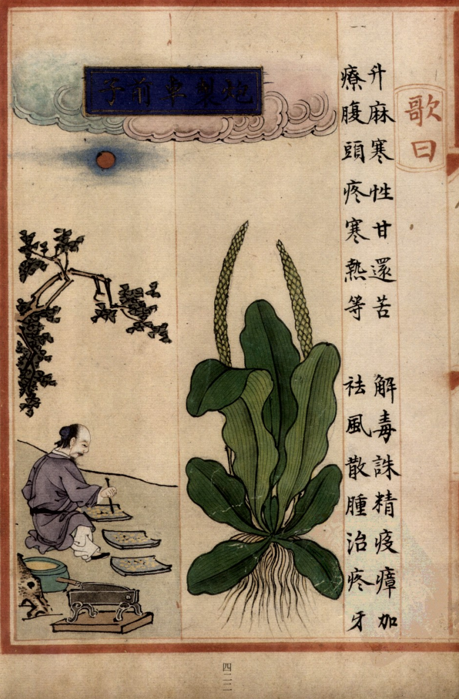
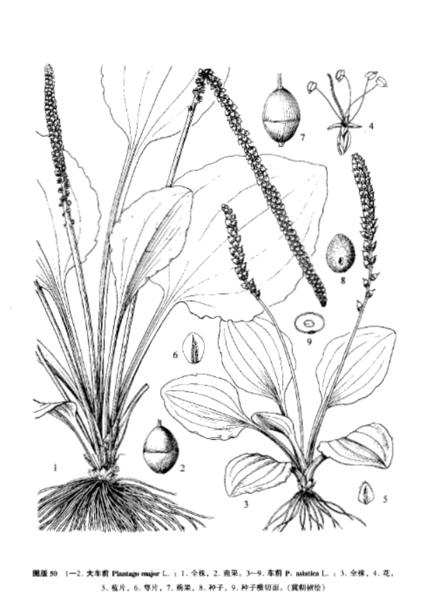

出现篇目
别名 当道（《本经》）、芣苡、马舄、牛遗（《并别录》）、牛舌草（《诗疏》）、车轮菜（《救荒》）、地衣（《纲目》）、蛤蟆衣（《别录》）
古代记载 《毛诗故训传》
芣苡，马舄。马舄，车前也，宜怀任焉。（《毛传》注《芣苢》）
《毛诗草木鸟兽虫鱼疏》
芣苡，一名马舄，一名车前，一名当道，喜在牛迹中生，故曰车前，当道也。今药中车前子是也。幽州人谓之牛舌草，可鬻作茹，大滑，其子治妇人难产。
《毛诗正义》
正义曰：《释草》文也。郭璞曰：“今车前草大叶长穗，好生道边。江东呼为虾蟆衣。”陆机《疏》云：“马舄，一名车前，一名当道，喜在牛迹中生，故曰车前、当道也。今药中车前子是也。幽州人谓之牛舌草，可鬻作茹，大滑。其子治妇人难产。王肃引《周书·王会》云：‘芣苡如李，出於西戎。’王基駮云：‘《王会》所记杂物奇兽，皆四夷远国各赍土地异物以为贡贽，非《周南》妇人所得采。’是芣苡为马舄之草，非西戎之木也。”言宜怀任者，即陆机《疏》云所治难产是也。（《毛诗正义》疏《芣苢》）
《诗集传》
芣苢、車前也。大葉長穗、好生道旁。（《诗集传》集注《芣苢》）
《本草纲目》
《别录》曰∶车前生真定平泽丘陵阪道中，五月五日采，阴干。
弘景曰∶人家及路边甚多。《韩诗》言 苡是木似李，食其实宜子孙者，谬矣。
恭曰∶今出开州者胜。
颂曰∶今江湖、淮甸、近汴、北地处处有之。春初生苗，叶布地如匙面，累年者长及尺余。中抽数茎，作长穗如鼠尾。花甚细密，青色微赤。结实如葶苈，赤黑色。今人五月采苗，七月、八月采实。人家园圃或种之，蜀中尤尚。北人取根日干，作紫菀卖之，甚误所用。陆玑言嫩苗作茹大滑，今人不复啖之。
时珍曰∶王 《山居录》，有种车前剪苗食法，则昔人常以为蔬矣。今野人犹采食之。
当代记载 《中国植物志》
车前 （Plantago asiatica）， 车前科，车前属植物。二年生或多年生草本。须根多数。根茎短，稍粗。叶基生呈莲座状，平卧、斜展或直立；叶片薄纸质或纸质，宽卵形至宽椭圆形，长4-12厘米，宽2.5-6.5厘米，先端钝圆至急尖，边缘波状、全缘或中部以下有锯齿、牙齿或裂齿，基部宽楔形或近圆形，多少下延，两面疏生短柔毛；脉5-7条；叶柄长2-15（-27）厘米，基部扩大成鞘，疏生短柔毛。花期4-8月，果期6-9月。产黑龙江、吉林、辽宁、内蒙古、河北、山西、陕西、甘肃、新疆、山东、江苏、安徽、浙江、江西、福建、台湾、河南、湖北、湖南、广东、广西、海南、四川、贵州、云南、西藏。生于草地、沟边、河岸湿地、田边、路旁或村边空旷处，海拔3-3200米。朝鲜、俄罗斯（远东）、日本、尼泊尔、马来西亚、印度尼西亚也有分布。

<补遗雷公炮制便览>

<中国植物志>